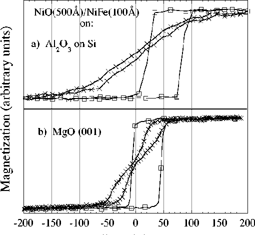

Figure 1: Magnetization as a function of
applied field for two NiO(500Å)/NiFe(100Å) films
deposited simultaneously on different substrates are shown.
a) shows the easy axis and hard axis response for the film
deposited on an amorphous Al2O3 film.
b) shows the response in the in- plane (100) directions on
the (001) face of MgO, parallel and perpendicular to
Hb.